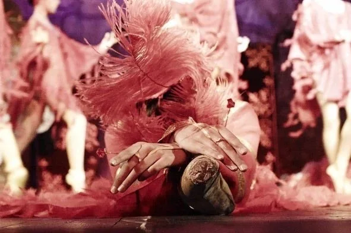
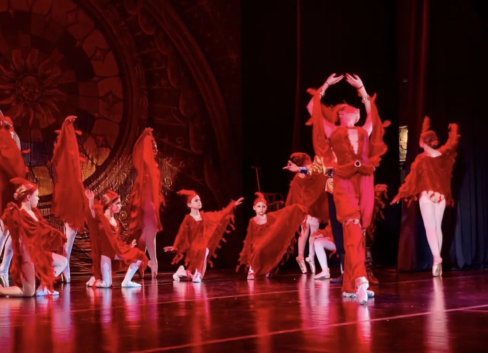
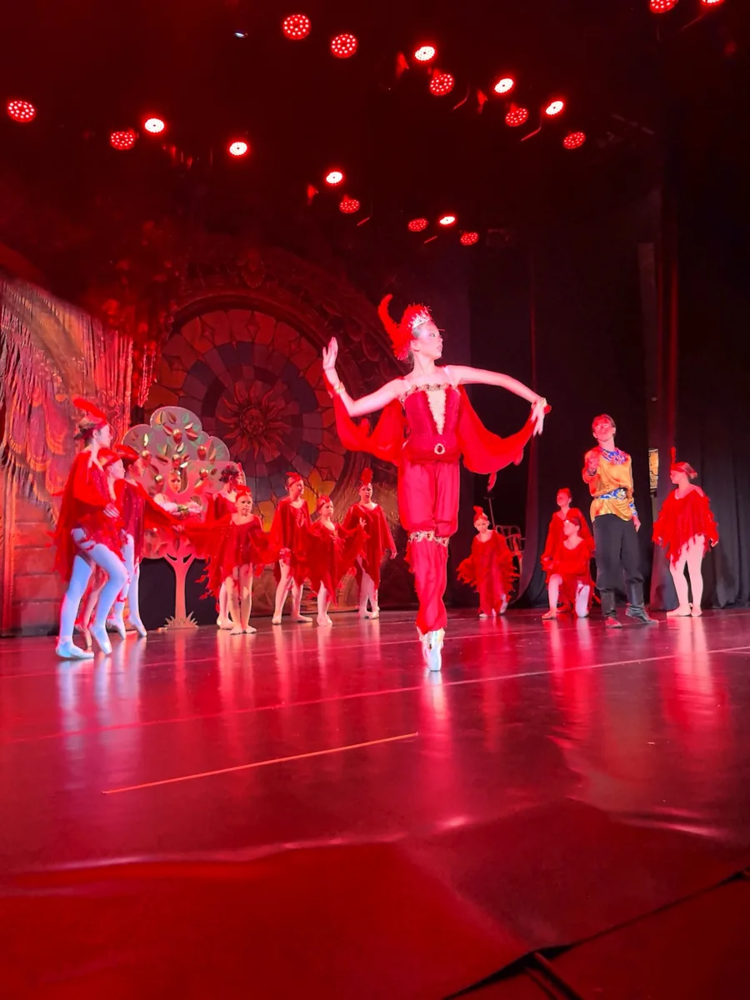
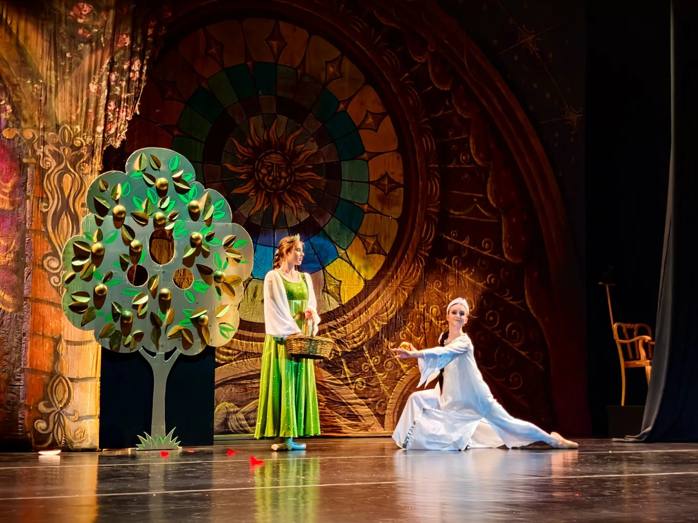
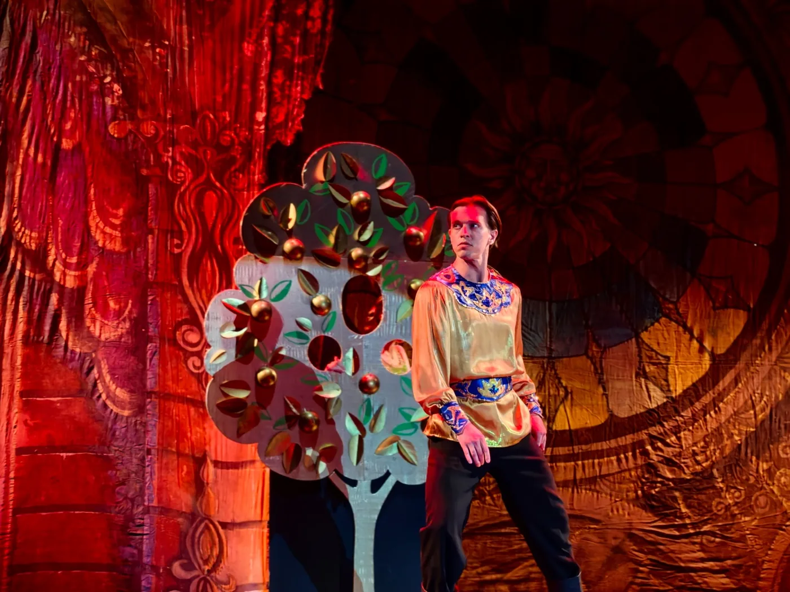
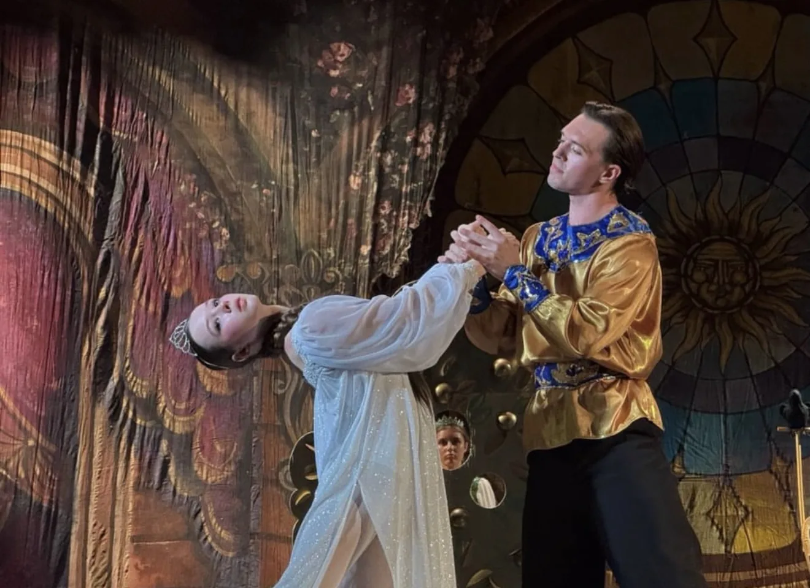
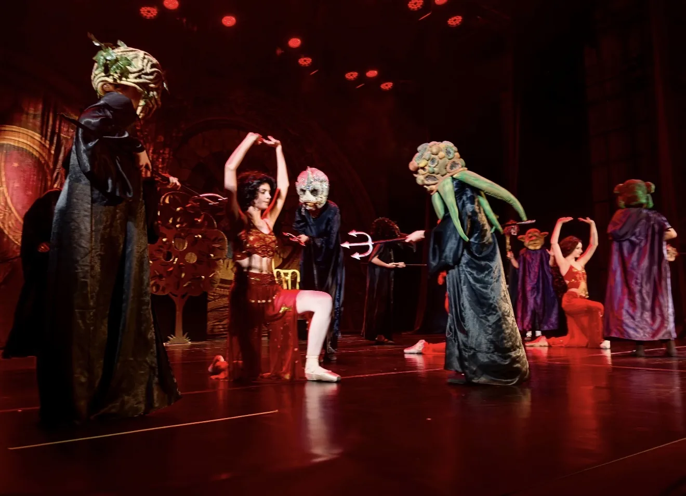
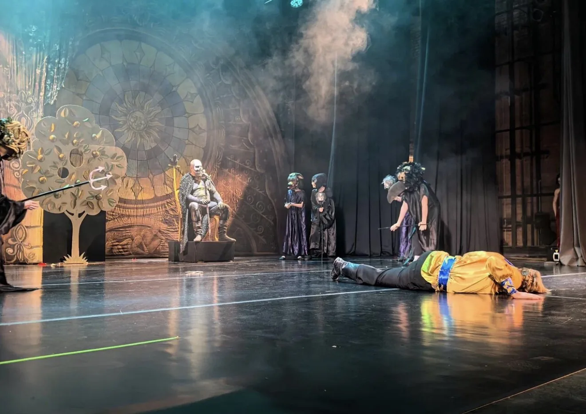
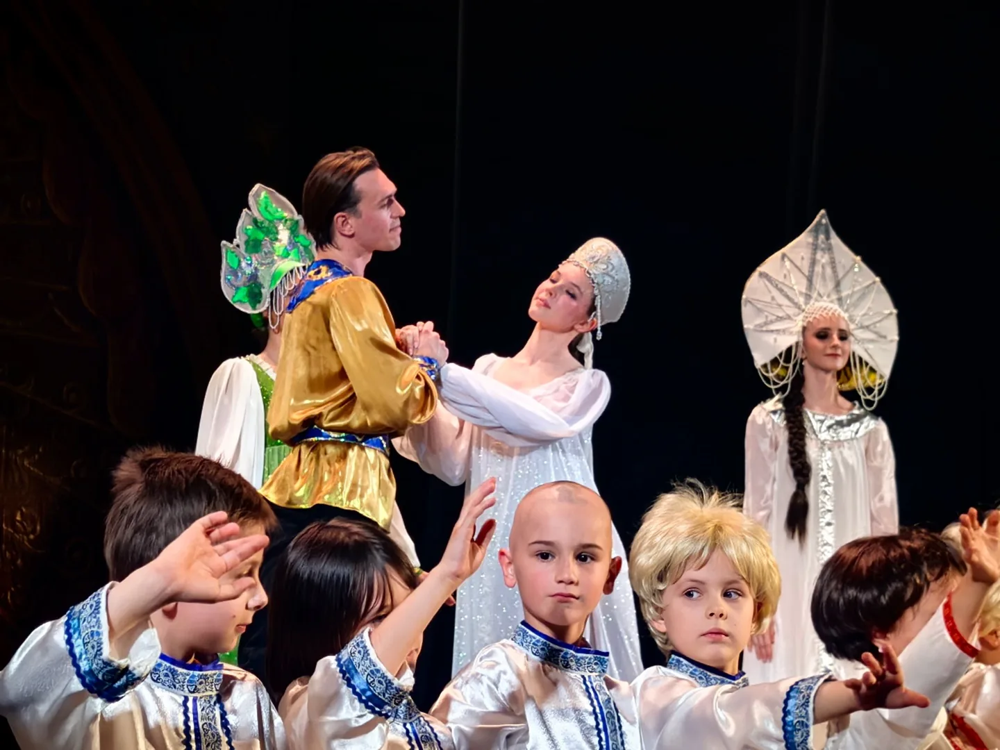
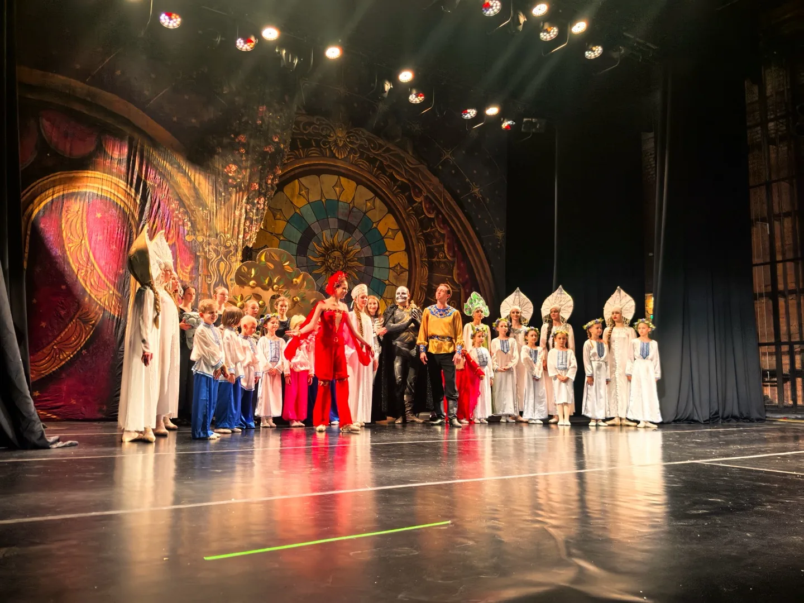

Спектакль
«Жар-птица»
Спектакль Детского театра балета «Эльф».
Постановка 2006 года, в которой мир русской сказки раскрывается через музыку Игоря Стравинского, оригинальное либретто и авторскую хореографию театра.
- С 2006 года
- Для зрителей от 5 лет
- Около 1 часа
- Одно действие
- Без антракта
О спектакле
Погружение в мир русской сказки
«Жар-птица» появилась в репертуаре Детского театра балета «Эльф» в 2006 году. Постановка сохраняет созданную тогда основу и за время своей сценической жизни прошла уже через три поколения воспитанников.
Спектакль создан на оригинальном либретто «Эльфа». Для него разработаны собственные режиссёрские и хореографические решения.
Постановка перекликается с классической традицией «Жар-птицы», сохраняя при этом авторскую хореографию театра.
Характер этого спектакля — погружение в сказочный мир русских сказок.
Постановка
Авторы спектакля
Либретто и режиссура
Наталия Вячеславовна Борисова
Балетмейстер-постановщик и хореография
Екатерина Викторовна Анисимова
Костюмы
Екатерина Викторовна Анисимова
Музыка
Игорь Стравинский
Образ Жар-птицы
Огненная птица
Жар-птица в постановке «Эльфа» — сказочное существо, которое непосредственно влияет на развитие событий.
Её сценический характер — огненный. Яркий цвет, движение, костюмы и свет создают вокруг неё особое пространство и задают один из главных визуальных образов спектакля.


Сказочный мир
Светлая сторона сказки
Визуальный мир «Жар-птицы» строится на контрасте разных сценических пространств.
Яркий огненный образ Жар-птицы сменяется светлыми сказочными сценами, а затем — тёмным Кащеевым царством.
Цвет, костюмы и свет становятся частью действия и помогают этим мирам звучать по-разному.


Сцены спектакля
От зачарованных царевен — к Кащееву царству
Среди ключевых эпизодов постановки — сцена птиц, сцена зачарованных царевен, Кащеево царство и финал, в котором чары Кащея рушатся.

Тёмный мир
Кащеево царство
В Кащеевом царстве меняется сам характер сценического пространства: яркие краски уступают тёмному свету и фантастическим образам.
В финале, во время Поганого пляса, Жар-птица побеждает Кащея — его чары падают, а тёмное царство рушится.


На сцене
От первых ролей — к сложным партиям
В «Жар-птице» участвуют воспитанники «Эльфа» примерно от 6 до 18 лет. Вместе с ними на сцену выходят выпускники, педагоги и профессиональные артисты.
Сценические задачи распределяются с учётом возраста и подготовки: для младших воспитанников есть более доступные роли, а к сложным партиям участники приходят по мере роста и накопления сценического опыта.


Для зрителей
Сказка для всей семьи
«Жар-птица» рекомендована зрителям от 5 лет и подходит для семейного просмотра.
Продолжительность спектакля — около одного часа. Он идёт в одном действии, без антракта.
Пробное занятие
Стать частью театра
Путь к сцене начинается с занятий. Участие в спектаклях становится продолжением обучения для тех воспитанников, которым интересна сценическая работа.
Пробные занятия бесплатно.